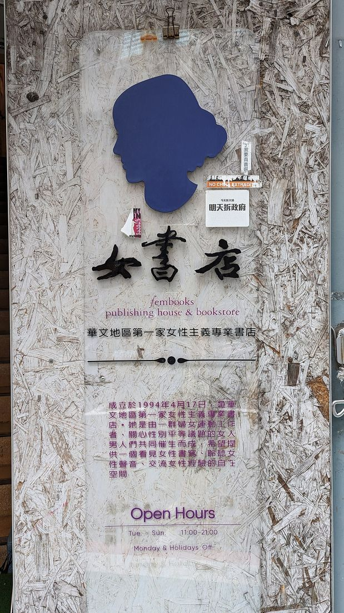

台北老店．公館溫羅汀
女巫店
台大對面的巷子裡，樓上是書店，樓下是一家叫「女巫店」的咖啡館。

一九九六年開到現在，快滿 30 年。陳綺貞、陳珊妮、張懸、蘇打綠，成名前都在這裡唱過。
大女巫的店
一九九六年二月二十一日開幕，創辦人彭郁晶，自稱「大女巫」。它是台北最早一批以女性主義為主題的餐飲店，樓上就是女書店。
從重金屬到不插電
同一年，一家地下搖滾場收掉，女巫店接手了它的音響設備，一開始台上多是重金屬和搖滾樂團。後來轉向不插電、民謠，還特別邀請沒沒無聞的女歌手上台。
差點消失的一年
二〇一一年，都市計畫一度讓它差點關門，最後以文創產業的身分留了下來。到二〇一五年，這裡已經累積一千場以上的演出。
專業點：晚上喝的低咖啡因
瑞士水處理法用水和生豆萃取液，把咖啡因帶走約 99.9%，全程大約 8–10 小時，不用化學溶劑。晚上聽歌想喝咖啡，又怕睡不著，可以試試看。
老照片與街景

店家資訊
- 店家
- 女巫店
- 地點
- 台北市大安區新生南路三段56巷7號1樓
- 現況
- 營業中
- 營業時間
- 常有變動，出發前請再確認
- IG 影片
- 12/25 上片
你第一次在女巫店聽到的是誰？留言告訴我。
到 IG 留言告訴我們
到 IG 留言告訴我們